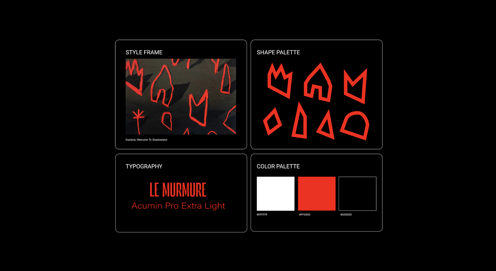

AN INTERACTIVE ILLUSTRATION FOR AN ARTICLE BY THE ATLANTIC ABOUT EXTREME FISHING. THE DESIGN MIRRORS THE ARTICLE'S TONE OF UNEASE, WITH READERS NAVIGATING THE TEXT USING A BEAM OF LIGHT. AS THEY SCROLL DEEPER, THE ENVIRONMENT DARKENS, HEIGHTENING THE SENSE OF FEAR AND DANGER.
Data Driven Coffee Packaging
CAFE GRANJA LA ESPERANZA
IS A HIGH-ALTITUDE COFFEE FARM IN COLOMBIA, KNOWN FOR ITS DISTINCT FLAVOR PROFILES. THIS PACKAGING TRANSLATES KEY DATA (ALTITUDE, HUMIDITY, TEMPERATURE AND MORE) INTO DESIGN ELEMENTS THAT REFLECT THE COFFEE’S SENSORY EXPERIENCE. THE RESULT IS A PACKAGING SYSTEM THAT TELLS THE STORY OF THE COFFEE’S ORIGIN AND MAKES ITS TASTE INSTANTLY RECOGNIZABLE.


Interactive Illustration: The Atlantic
AN INTERACTIVE ILLUSTRATION FOR AN ARTICLE BY THE ATLANTIC ABOUT EXTREME FISHING. THE DESIGN MIRRORS THE ARTICLE'S TONE OF UNEASE, WITH READERS NAVIGATING THE TEXT USING A BEAM OF LIGHT. AS THEY SCROLL DEEPER, THE ENVIRONMENT DARKENS, HEIGHTENING THE SENSE OF FEAR AND DANGER.


Print Edition
A CONTINUATION OF THE INTERACTIVE EDITORIAL, TRANSLATED INTO PRINT. THE DESIGN EXTENDS THE EERIE ATMOSPHERE BY INTEGRATING A FISHING ROD HANGING OFF THE TITLE, WITH NEGATIVE SPACE CREATING A SENSE OF FEAR AND ISOLATION THROUGH THE DARK, EMPTY SECTION. THE PRINT VERSION MAINTAINS A COHESIVE VISUAL EXPERIENCE, REINFORCING THE NARRATIVE'S THEMES ACROSS BOTH MEDIUMS.

Logo Animations for Pepsico Lab Chats
ANIMATED LOGOS FOR PEPSICO LABCHATS THAT EMBODY THE BRAND'S INNOVATIVE SPIRIT. THE ANIMATIONS ENHANCE THE VISUAL IDENTITY, CONVEYING THE ENERGY AND EXCITEMENT BEHIND PEPSICO'S COMMITMENT TO DIALOGUE AND INNOVATION.

Halloween 1978 Title Sequence Reimagined
A REIMAGINED TITLE SEQUENCE INSPIRED BY KAZLAND'S PAINTING "WELCOME TO SHADOW LAND." THE SEQUENCE BLENDS NOSTALGIA WITH A CONTEMPORARY POP TWIST TO SET THE TONE FOR THE SPOOKY SEASON.

Halloween 1978 Title Sequence Reimagined
A ZINE TITLED "THE EMBODIED MIND" THAT EXPLORES THE RESPONSIBILITIES OF DESIGN TECHNOLOGISTS IN SHAPING DIGITAL LANDSCAPES. IT EMPHASIZES CREATING WITH PURPOSE, FOSTERING GENUINE HUMAN CONNECTION, AND ENCOURAGING DEEPER INTERACTIONS IN A RAPIDLY EVOLVING DIGITAL WORLD.


Ombligo Belly Button Serum Brand Identity
A BRAND CONCEPTUALIZATION FOR A HOLISTIC WELLNESS BRAND ROOTED IN AYURVEDIC PRACTICES, OFFERING BELLY BUTTON SERUMS TO TARGET DIFFERENT ASPECTS OF PERSONAL CARE. THE BRAND IDENTITY FEATURES UNIQUE PATTERNS FOR EACH SERUM: IRIDESCENT TEXTURES FOR SKIN CARE TO REPRESENT RADIANCE, TREE AND ROOT MOTIFS FOR HEALTHY ROOTS TO SYMBOLIZE GROWTH, AND WIND-INSPIRED DESIGNS FOR PURIFYING SERUMS TO CONVEY FRESHNESS AND RENEWAL.

Projection Mapping for Mindfulness
A MEDITATION EXPERIENCE USING PROJECTION MAPPING ONTO THE BODY, WITH VISUALS PROJECTED ON THE HAND. THIS IMMERSIVE APPROACH EXPLORES THE CONNECTION TO OUR HANDS, EMPHASIZING THE MIND-BODY CONNECTION AND ENHANCING MINDFULNESS THROUGH VISUAL STORYTELLING.